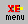

XEmacs offers a standard tool bar that includes all commands and options which are important for emacs novices and more advanced users.
To display this tool bar within the Vista's text pane:

When you do so, the following top-level s are displayed.
To hide the XEmacs tool bar: